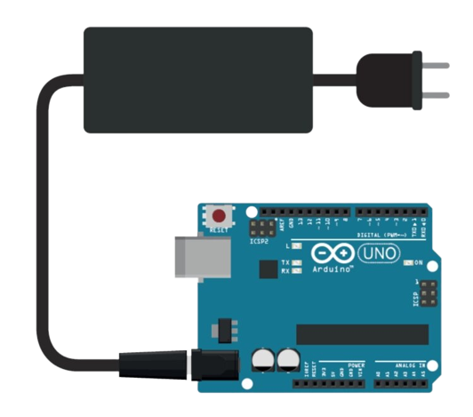

La alimentación de Arduino se realiza a través de un cable USB, el cual se conecta a la placa y a un puerto USB de la computadora. La alimentación se realiza a través de un regulador de voltaje interno, el cual convierte la tensión de 5V que proporciona el puerto USB a 5V.
Al tratarse de una entrada de corriente directa, la conexión del eliminador tiene una polaridad que debe ser respetada: el polo positivo debe ir al centro del conector. El voltaje adecuado a usar en esta entrada es de 7 a 12 volts DC. Voltajes menores (5 a 7 volts) en esta entrada pueden causar que el regulador interno del arduino no pueda trabajar correctamente. Voltajes mayores a 12 pueden causar el rápido sobrecalentamiento del regulador, aunque la cantidad de accesorios conectados (la demanda de corriente) no sea grande. Esta entrada tiene un diodo de protección para inversión de polaridad, por lo que si no se respeta la polaridad, no ocurrirán daños, pero la tarjeta arduino NO funcionará.